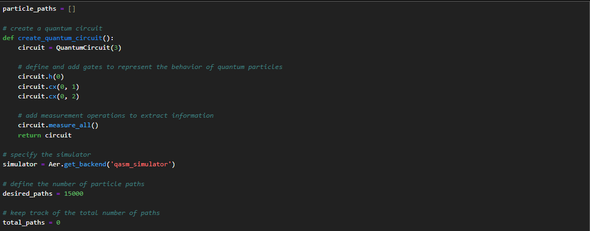

Predicting Qubit States With Quantum Neural Networks
We start by initializing our variable particle_paths, where we will store all paths generated for our dataset. We then create the quantum circuit consisting of 3 gates, and at the end of the circuit we will use measure_all to capture the behaviors of each particle. I use the Qasm Simulator, and specify the number of particle paths I would like to be considered.
*Note that the total path number may fall just below the number you set*
